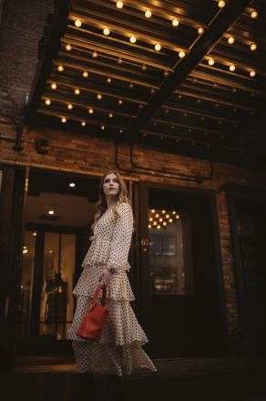
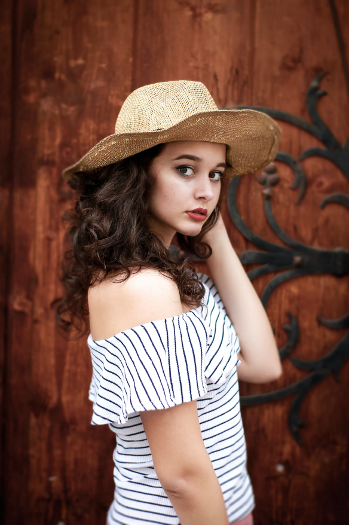
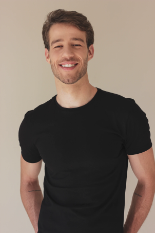

2021 Fashion trends
For those of us who remember ordering from the Delia's catalogue in the late '90s and early 2000s, the trends dominating summer 2021 look eerily familiar: bucket hats, friendship bracelets, kitten heels (kitten heels!)
Temperatures may already be through the roof, but there’s still time to figure out what to wear this summer and get your reemergence wardrobe in order. Whether you’ve already begun dressing to the nines or are slowly working up the nerve to slip back into a pair of structured pants, this season’s seen-everywhere pieces have a little something for everyone.
TOP 10’s
- 90’s Revival
- Sarurated Hues
- Loose-Fit Denim
- Midriff-Baring Sets
- Printed Pants
- Puffy, Textured Handbags
- Lavender
- Platforms and Flatforms
- Sequins and Sparkles for Day